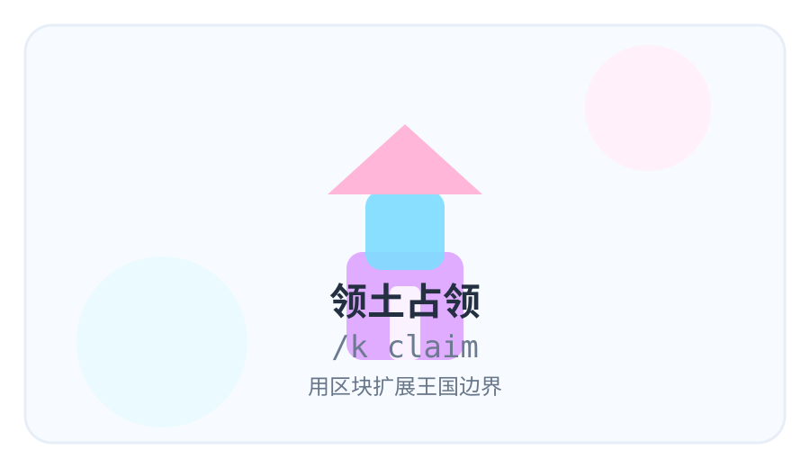
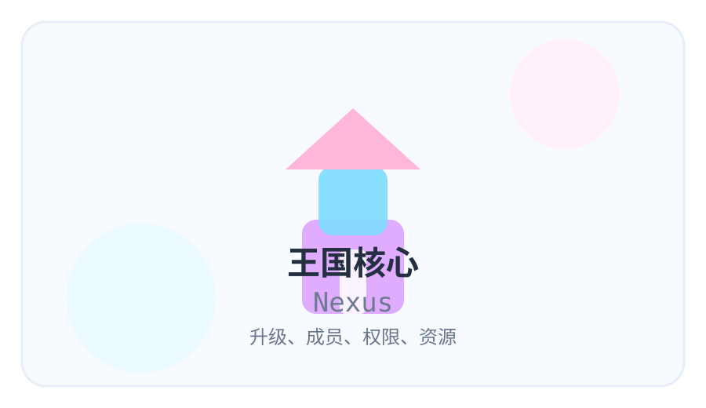
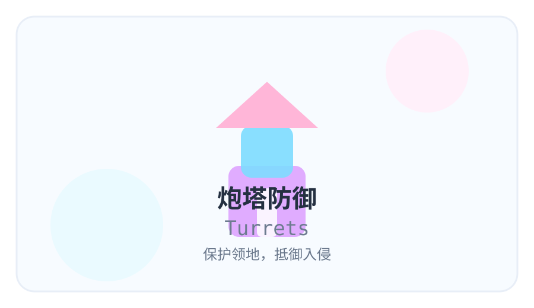
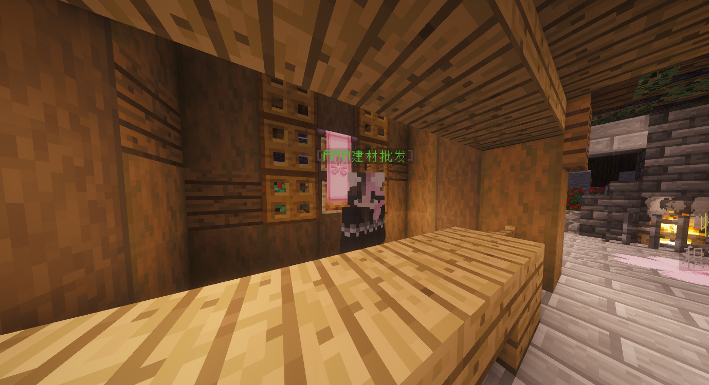
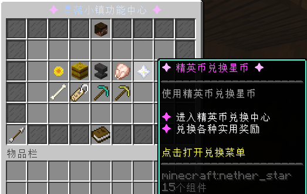
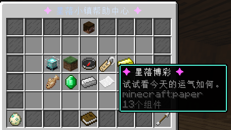

Starfall Town Guide
服务器基础玩法
圈地、王国、主城商店与星币获取，一页看懂。
先看这里
先学什么
先记住 /dom 圈地、/k 看王国、Shift+F 打开主菜单这三个入口。
先做什么
先圈自己的家和仓库，再去拿基础工具，最后开始做委托、钓鱼或种田赚钱。
重点提醒
王国和领地都是长期玩法，越早建立越省事；箱子、作物、建筑先保护好再扩建。
学完以后
你就能独立完成安家、发展、赚钱和王国管理，不会一进服就迷路。
服务器基本玩法
星落小镇是轻 RPG 冒险生存服务器：你可以圈地安家、建设王国、种田钓鱼、料理经营、挑战 Boss，也可以收集宠物和家具慢慢装修自己的小镇生活。
生存建造圈地保护王国发展星露谷种植钓鱼料理精英挑战宠物收集
圈地保护 / Dominion
- 输入 /dom 打开领地管理菜单。
- 使用服务器提供的箭矢工具，自由选择领地范围。
- 圈好后在菜单里管理成员权限、容器、交互、传送和其他领地设置。
- 建议先圈住宅和仓库，避免建筑、箱子或作物被误碰。
王国玩法 / KingdomsX
输入 /k 查看王国指令。王国玩法围绕土地、核心、成员、升级、防御和外交展开。



- 创建或加入王国，和伙伴一起占领土地。
- 升级王国核心，提升成员、领土、防御和资源能力。
- 制作炮塔、结构和守卫，抵御敌对玩家与怪物。
- 发展外交关系，选择结盟、保持中立或参与战争玩法。
主城 NPC 与建筑商店
主城有 NPC 建材商店，方便喜欢建筑的玩家快速购买常用材料，不需要反复跑图收集。

四大额外 Boss 与特殊装备
服务器拥有四种额外 Boss 挑战。击败它们有概率获得专属特殊装备，这些装备不只是数值更高，还能释放对应 Boss 风格的炫酷技能。
⚔
科兰斯守护者主题装备，偏近战压制与战场控制。
🐍
蛇棺娘冥婚蛇妖主题装备，偏诅咒、毒性与范围压迫。
☀
圣裁之翼天使审判主题装备，偏圣光、召唤与裁决技能。
♞
魂骑 / 骑士骑士主题装备，偏冲锋、锁定与武器连段。
Boss 装备的主动或被动技能通常有冷却时间。战斗前请看清装备 lore，不要把它当普通武器使用。
星币获取来源
| 来源 | 说明 |
|---|---|
| 每日委托 / 常驻委托 | 接任务完成目标，适合每天稳定获得星币。 |
| 钓鱼与鱼市 | 钓到的鱼可在菜单鱼市出售，更多渔具可在主城 NPC 兑换。 |
| 更多帮助中心收购商店 | 菜单第二页进入更多帮助中心，打开收购商店出售物品。 |
| 星露谷作物 | 主城 NPC 购买种子，种植收获后出售作物。 |
| 讨伐怪物 | 击杀普通怪、精英怪或挑战区域怪物获得收益。 |
| 精英币兑换星币 | 菜单第二页更多帮助中心，可把精英币兑换为星币。 |
| 购买彩票 / 博彩 | 娱乐型收益来源，有风险，量力而行。 |


博彩属于娱乐玩法，不建议把全部星币投入其中。稳定赚钱优先选择委托、种植、钓鱼和收购商店。
新手推荐路线
- 先按 Shift+F 打开菜单，熟悉帮助中心和更多帮助中心。
- 用 /dom 圈好家和仓库，再开始建设。
- 每天做委托，顺手钓鱼、种植或出售多余材料。
- 有朋友后再发展王国，升级核心并布置炮塔守卫。
- 装备和料理准备好后，再挑战精英怪、Boss 和高风险区域。